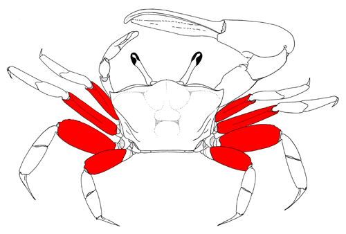
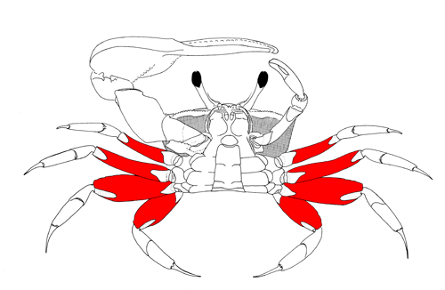
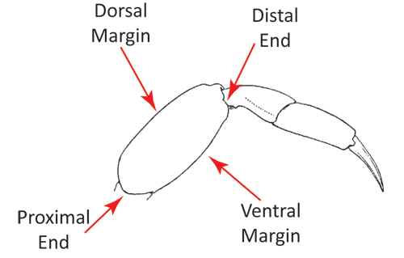

The fourth segment of the leg (and 1st major segment), ther merus connects the ischium to the carpus. The merus is the largest segment in the leg and often contains characters which can be used to distinguish between species.

The meri of the eight walking legs, from the dorsal view of the crab. Figure modified from Crane (1975).

The meri of the eight walking legs, from the vental view of the crab. Figure modified from Crane (1975).

The parts of the merus, from a posterior view of a walking leg. Figure modified from Forest and Guinot (1961).